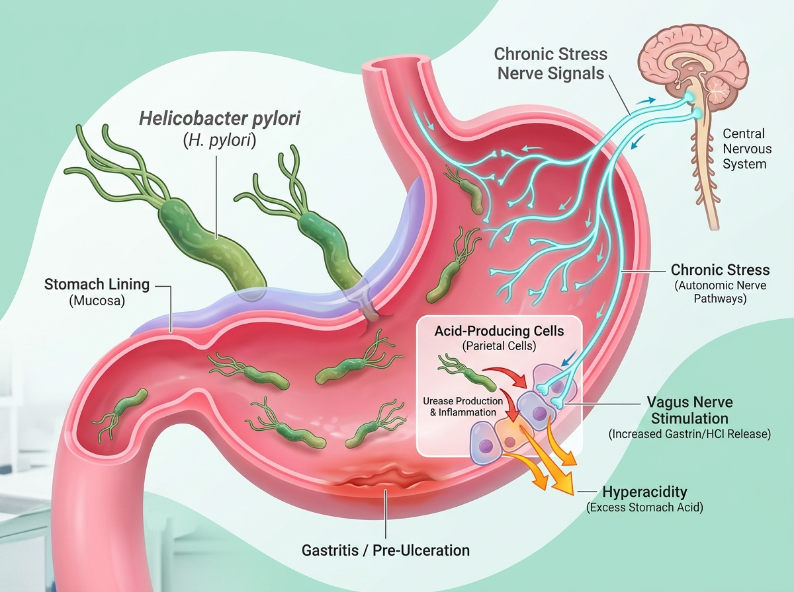
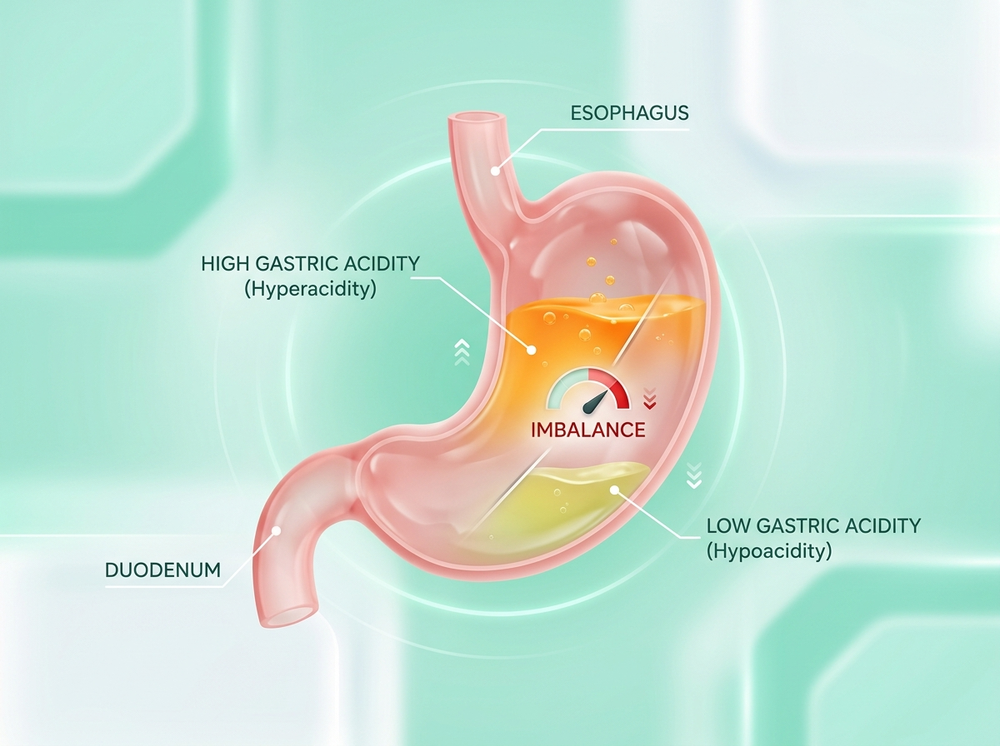
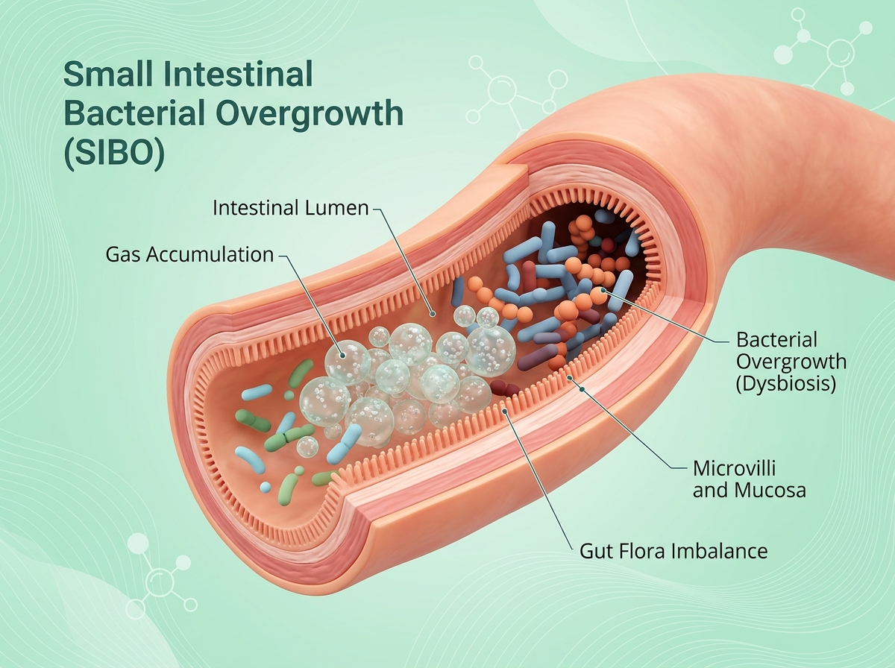
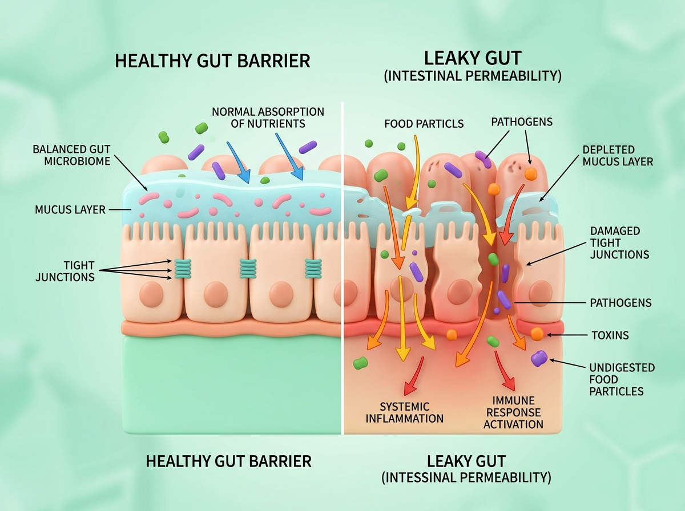
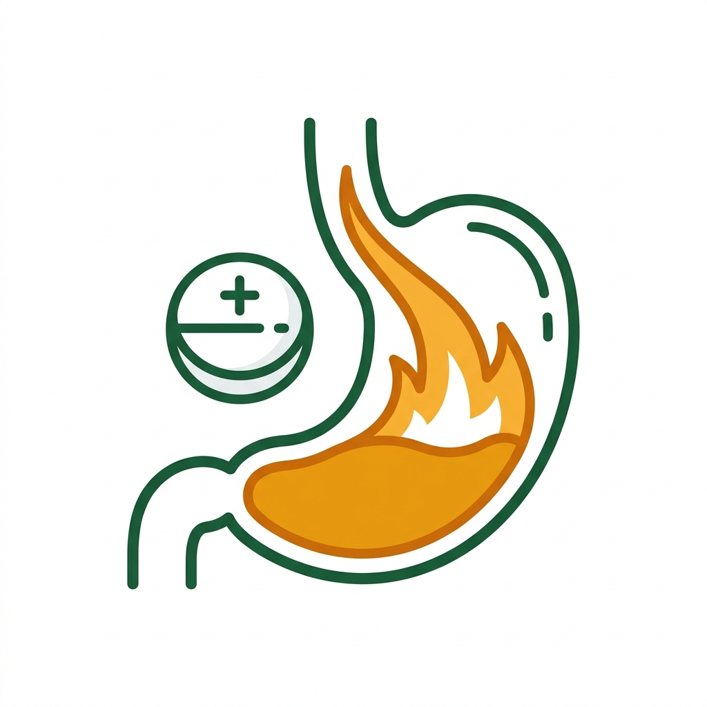
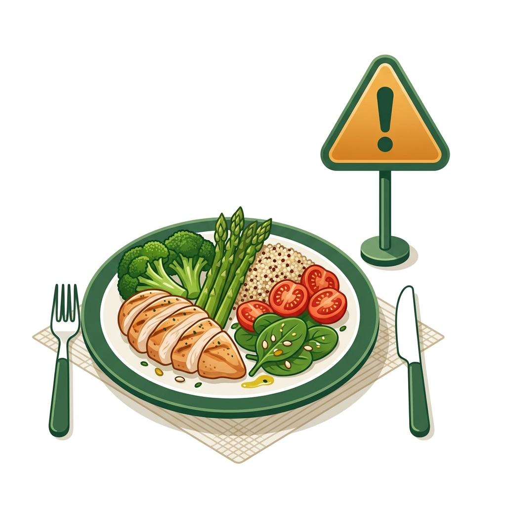
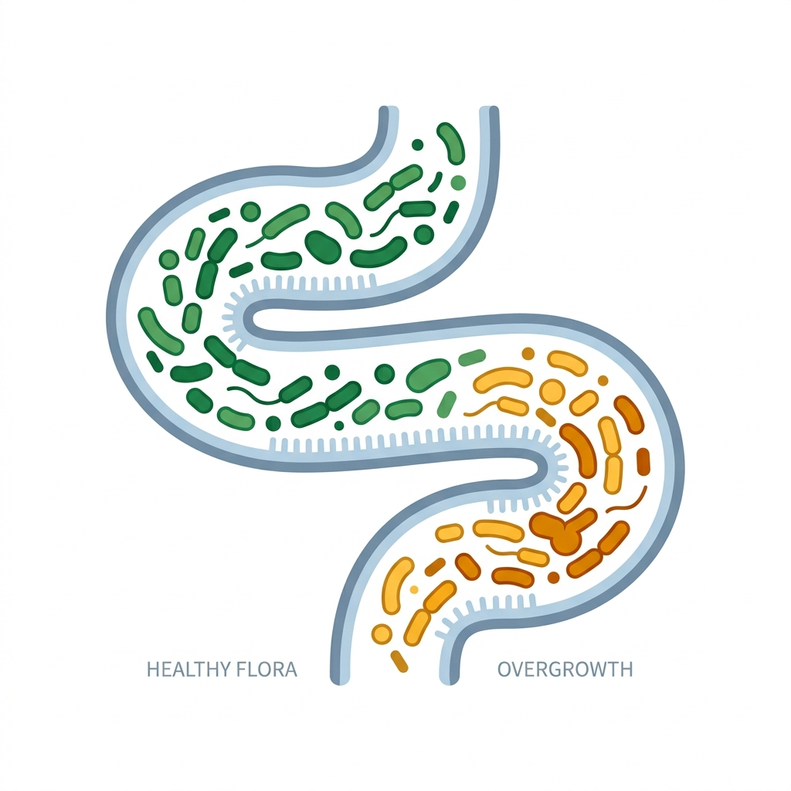
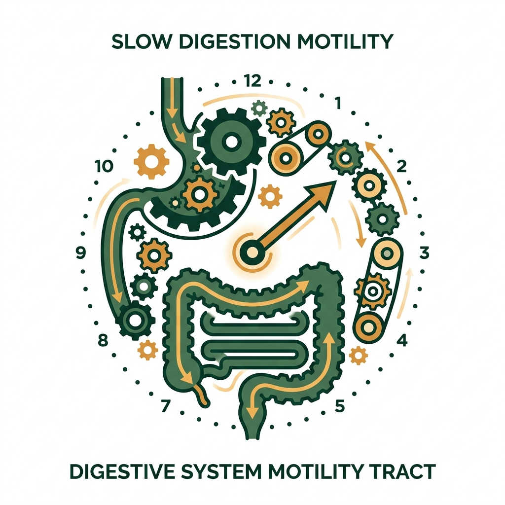
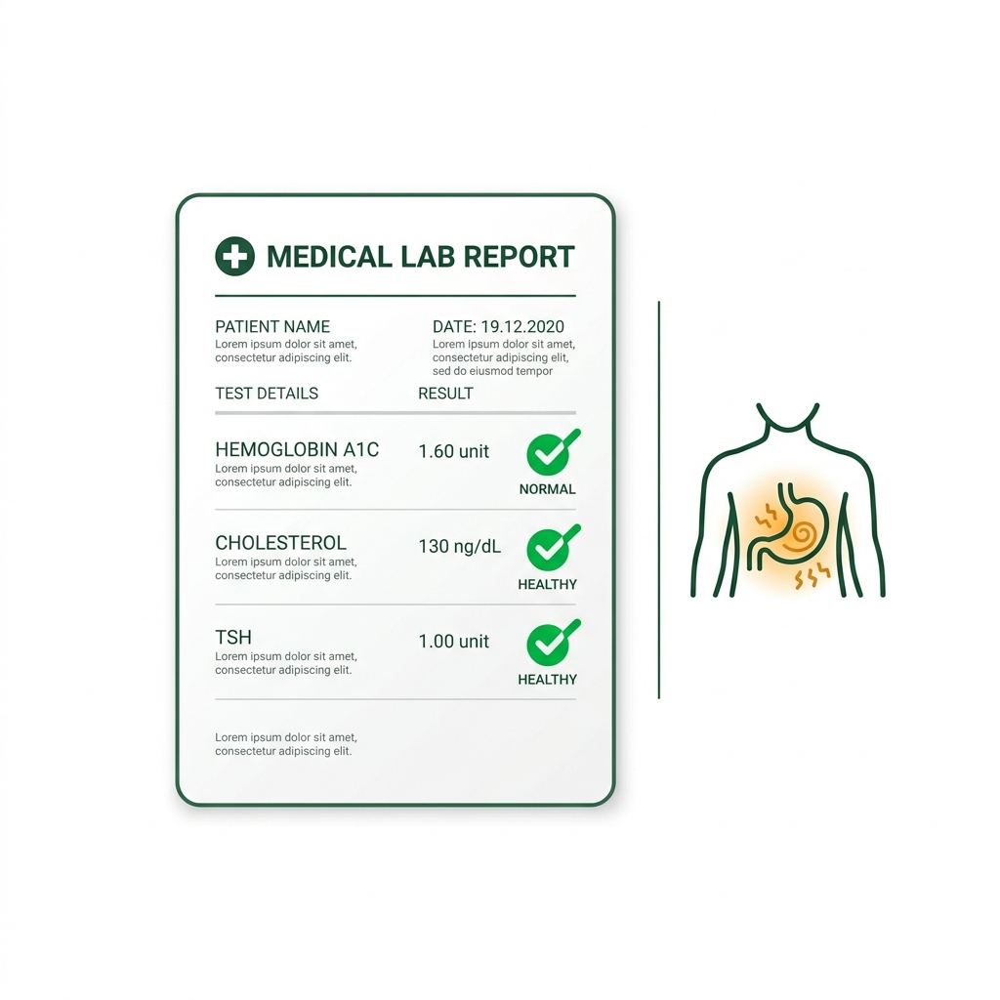

Symptom Mapping
We map your exact digestive pattern— burning, bloating, food reactions, bowel habits and symptom timing.
Understand what's happening daily.
Our Experts Use The Exact System That's Helped 5000+ People Heal Naturally, Mapping The Root Cause And Past Patterns Behind Your Condition For Complete Relief
Successfully supporting people struggling with Acidity, IBS, GERD, SIBO, and Bloating through a sustainable, root-cause approach.
H.Pylori or chronic stress imbalances your stomach acid. Imbalanced acid levels cause bacteria to overgrow. Overgrowth damages your gut lining. A damaged lining is why the same symptoms keep circling back, no matter what you take.

STEP 01Initial infection or ongoing stress weakens stomach acid secretion & digestive defense.

STEP 02Stomach acid drops below the threshold needed to kill bad bacteria and digest food.

STEP 03Bacteria colonize the small intestine, overgrowing and fermenting meals into uncomfortable gas.

STEP 04Overgrowth toxins wear down mucosal cell junctions, creating intestinal permeability.
Leaked particles trigger systemic inflammation, food fear, reflux & gut-brain anxiety.
Taking antacids for acidity, or antibiotics for bacteria. Leaving the rest of the 5-step chain active means the same symptoms keep circling back, no matter what you take.
We map your exact position on this 5-step domino line, giving you a clear doctor-led roadmap on what to fix first.
Most patients booking this call have already spent ₹20,000 to ₹70,000+ on doctors, tests, medicines, and treatments that gave temporary relief at best.
Reduces stomach acid temporarily
Doesn't heal gut lining; can worsen low stomach acid (hypoacidity) long-term.
Clears the active infection
Doesn't repair the gut lining damage the infection or antibiotics caused.
Adds good bacteria
Doesn't fix the damaged environment those bacteria need to survive in.
Removes trigger foods
Doesn't address low acid, SIBO, or gut lining repair underneath.
Manages symptoms temporarily
Rarely identifies the specific case (SIBO vs IBS vs Bile Reflux, etc.).
We map your specific pattern first, then treat the actual cause — not the closest matching symptom.

Burning comes back a few hours after the antacid wears off.
Daily PPI Dependence
Bloating after meals makes you scared of eating normally
Chronic Food FearH. Pylori is negative now — but reflux, burning or gastritis still continues.
Post-Antibiotic Gastritis
IBS or SIBO has been mentioned. But nobody has mapped what's actually triggering your specific pattern.
Unresolved Diagnosis
Constipation feels incomplete without a laxative, churan or pressure.
Sluggish Gut Motility
Reports look normal. Your body clearly does not agree.
Functional Gut DistressWe map your exact digestive pattern— burning, bloating, food reactions, bowel habits and symptom timing.
We review your complete history, failed diets, supplements, medications and previous reports.
Get access to Thavira's Gut Recovery Course & Supplements Playbook with a personalized action plan.
Understanding root-cause mapping vs. continuous symptom suppression
Instead of just suppressing acid production, we review gut motility, lower esophageal sphincter pressure triggers, and potential low-stomach-acid patterns that cause backflow.
We analyze visceral hypersensitivity, motility loops, and bacterial overgrowth indicators to help direct you toward diet phases that starve bad bacteria without nutritional depletion.
If antibiotic therapies left your gut burning, we focus on mucosal barrier defense support, restoring healthy acidity thresholds, and addressing remaining gut inflammation.
We analyze bile flow patterns, pelvic floor function indicators, and enteric nervous system triggers to stop your dependency on harsh OTC laxatives or herbal churans.
We map enzyme deficiencies, gut fermentation levels, and food transit patterns to isolate which food categories are fermenting prematurely in your small intestine.
We look at vagus nerve regulation, gut-produced serotonin levels, and whether your anxiety is driving your gut symptoms or your gut is driving your anxiety, because for most people, it's both, and they've never been treated together.
It's about knowing what your gut issue is actually pointing toward, so the fix can be permanent instead of temporary
Get Personalised Gut Clarity — ₹199YOUR TREATMENT TEAM
Not coaches. Not nutritionists.
This is a ₹199 gut clarity consultation — not a full treatment program. The goal is to understand your symptoms, history and likely root-cause direction so you know what your next step should be.
Yes. After payment, Thavira's team contacts you and confirms your slot. Your consultation is then scheduled with an expert
Most approaches focus on relief first. This call focuses on clarity first — your symptom pattern, history, current medicines and what direction your gut issue may actually be pointing toward.
No. Do not change any prescribed medication without expert guidance. If you are taking prescribed medicines, continue them unless your doctor advises otherwise.
No. The call covers all chronic gut issues — acidity, GERD, bloating, constipation, indigestion, H. Pylori history, IBS/SIBO-like symptoms and recurring stomach discomfort.
Yes — this is one of the most common reasons people book. Reports can look normal while symptoms still affect your meals, energy, sleep and daily routine. The call helps connect your history with your current pattern.
Often, yes. About 90% of your serotonin, the hormone tied to mood and sleep, is made in your gut. When your gut is inflamed or imbalanced, that production drops, which is why anxiety and gut issues so often show up together. We look at both in the same consultation, not just your digestion in isolation.